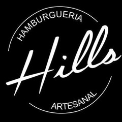
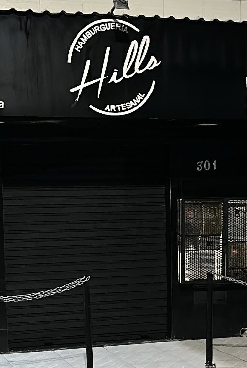

Início · O salão
O salão da Hills, em Pau da Lima
Balcão com banquetas, mesas de madeira e sofá no canto. Hamburgueria artesanal desde 2018, com fachada renovada em janeiro de 2026.

Por dentro
Para comer ali mesmo
“Vem pra Hills ou peça o seu delivery!”Hills Hamburgueria, Instagram, 09/04/2026
Endereço
Rua Pastor José Guilherme de Morães, 301

R. Pastor José Guilherme de Morães, 301 · Pau da Lima, Salvador · CEP 41235-015.
Abrir no Google MapsHorário
Almoço e lanche
“NOVIDADE NA HILLS! Sua hamburgueria favorita agora de portas abertas também durante o dia!”Hills Hamburgueria, Instagram, 09/04/2026
Horário publicado pela casa no Instagram. Confirme pelo WhatsApp antes de ir.
História
Hamburgueria de bairro desde 2018
“Desde 2018” é como a Hills se apresenta no Instagram. Em 2019, a casa entrou no guia Veja Comer & Beber Salvador, com onze burgers no cardápio. Hoje são quinze, mais dezesseis pastéis, coxinhas, açaí e shakes.
“Mudamos por fora, mas o sabor continua absurdo”Hills Hamburgueria, Instagram, 16/01/2026
Dúvidas frequentes
Perguntas comuns
Precisa reservar?
A casa não anuncia reserva. Para grupos, fale pelo WhatsApp.
O almoço tem o mesmo cardápio?
A casa anunciou “um cardápio completo” no almoço. Confirme os itens do dia pelo WhatsApp.
Bateu a fome?
Monte o pedido e mande direto para a Hills.
Sem aplicativo no meio: o pedido chega organizado no WhatsApp da casa. Para comer ali mesmo, o salão fica na Rua Pastor José Guilherme de Morães, 301.